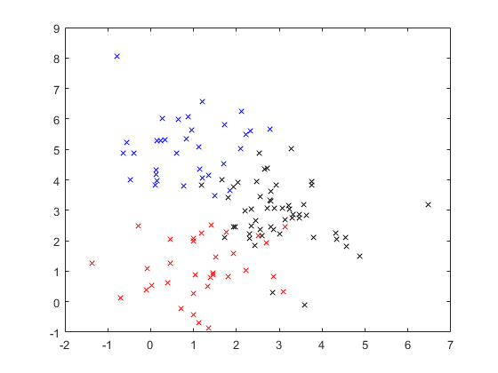
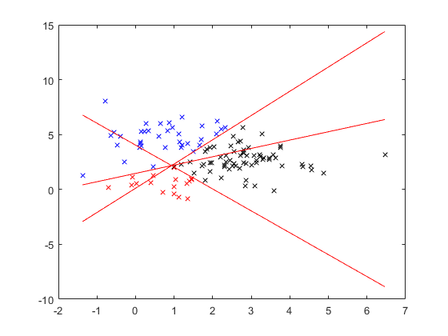

clear all
close all
N=120;
Dnoise=0;
disp(sprintf('Number of spurious predictors added = %d',Dnoise));
opt.verbose=1;
mix.m=3;
mix.state(1).m=[1,1]';
mix.state(2).m=[1,5]';
mix.state(3).m=[3,3]';
for i=1:3,
mix.state(i).C=eye(2);
mix.state(i).prior=1/3;
end
[x,label] = spm_samp_mix (mix,N);
if opt.verbose
figure
col={'rx','bx','kx'};
for i=1:3,
ind=find(label==i);
plot(x(ind,1),x(ind,2),col{i});
hold on
end
end
ind = randperm(N);
x = x(ind,:);
label = label(ind,:);
x = [x,1.65*randn(N,Dnoise),ones(N,1)];
opt.diag=0;
opt.verbose=1;
tic; bsr = bsr_fit (x,label,opt); toc
[y,a] = bsr_output (bsr,x);
[logbf,z] = bsr_savage_dickey(bsr);
disp(' ');
disp('Log BF, row is class(k), column is feature (d):');
disp(logbf)
disp(' ');
disp('z, row is class(k), column is feature (d):');
disp(z)
disp(' ');
disp('Sum LogBF over classes:');
disp(sum(logbf,1));
[y,a,ymod] = bsr_output (bsr,x);
if opt.verbose
figure
col={'rx','bx','kx'};
for i=1:3,
[tmp,assign]=max(y');
ind=find(assign'==i);
plot(x(ind,1),x(ind,2),col{i});
hold on
end
if Dnoise==0
bsr_plot_boundary (bsr,x);
end
end
Number of spurious predictors added = 0
Iteration 1, Log Joint = -211.407707
Iteration 2, Log Joint = -98.555881
Iteration 3, Log Joint = -81.201424
Iteration 4, Log Joint = -76.471585
Iteration 5, Log Joint = -75.550608
Iteration 6, Log Joint = -75.146381
Iteration 7, Log Joint = -74.890360
Iteration 8, Log Joint = -74.729525
Iteration 9, Log Joint = -74.610987
Iteration 10, Log Joint = -74.522621
Iteration 11, Log Joint = -74.449060
Iteration 12, Log Joint = -74.387357
Iteration 13, Log Joint = -74.332592
Iteration 14, Log Joint = -74.284017
Iteration 15, Log Joint = -74.239819
Iteration 16, Log Joint = -74.199738
Iteration 17, Log Joint = -74.162966
Iteration 18, Log Joint = -74.129335
Iteration 19, Log Joint = -74.098403
Iteration 20, Log Joint = -74.070018
Iteration 21, Log Joint = -74.043894
Iteration 22, Log Joint = -74.019887
Iteration 23, Log Joint = -73.997790
Iteration 24, Log Joint = -73.977469
Iteration 25, Log Joint = -73.958766
Iteration 26, Log Joint = -73.941561
Iteration 27, Log Joint = -73.925725
Iteration 28, Log Joint = -73.911156
Iteration 29, Log Joint = -73.897746
Iteration 30, Log Joint = -73.885407
Iteration 31, Log Joint = -73.874051
Iteration 32, Log Joint = -73.863600
Iteration 33, Log Joint = -73.853982
Iteration 34, Log Joint = -73.845130
Iteration 35, Log Joint = -73.836983
Iteration 36, Log Joint = -73.829486
Iteration 37, Log Joint = -73.822585
Elapsed time is 0.056573 seconds.
Log BF, row is class(k), column is feature (d):
-0.9294 6.9990
12.1796 32.7921
28.6920 -1.3736
z, row is class(k), column is feature (d):
0.5565 4.0603
5.1111 8.2804
7.7349 0.5762
Sum LogBF over classes:
39.9421 38.4175
 